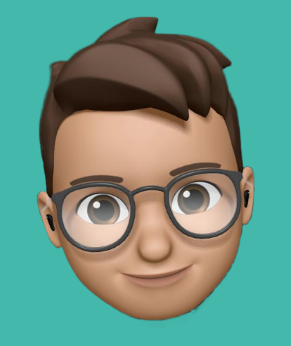
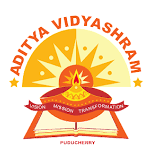

WELCOME
I'm Raamkishore , passionate about AI, Deep Learning, and Web Development
Exploring the limitless potential of technology excites me
Join me on this journey where innovation meets creativity in the digital realm.
Currently,I am interested in
- Learning and building multi-modal learning models
- Building a AR headset that recognize speech and generate subtitle for hearing impaired individuals
- Developing secure and scalable LLM for everyone
Education
Secondary school:Aditya vidyashram residental school at pondicherry

Pursing Bachelor Degree:B.Tech computer science and engineering at National instiute of technology Puducherry
Skills
2 years of programming experience in Python ,C,C++ programming language
Proficient in Html css and Javascript for frontend development
My backend development skills includes Mysql and MongoDB
My soft skills includes presentation,critical thinking ,problem solving
Projects
- Created a W3Schools clone It offers seamless navigation, a code editor, and compiler for interactive learning.
Python quizzes aid students identifying weak areas, enhancing their understanding. - Developed a cutting-edge Text to AI Image Generation app with a 95% accuracy rate.
Ensured compatibility across all devices, including mobile, tablets, and PCs.
Key features include adjustable height and width for custom image generation, with a focus on security and scalability for a seamless and reliable user experience - Built a robust NLP based spell checker for Tamil language using Levenshtein distance with edit distance constraint using
tensorflow and keras
Worked on Hospital token management system using python tkinter,sqlite3 module to build a secure and scalable app for
users
My hobbies :
- Reading inspirational books
- Playing badminton
- Watching movies
- contributing to open source projects